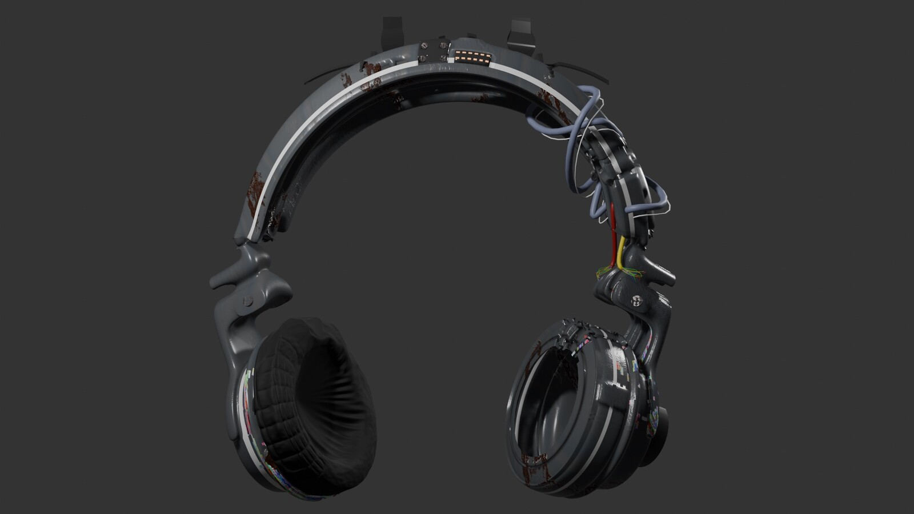
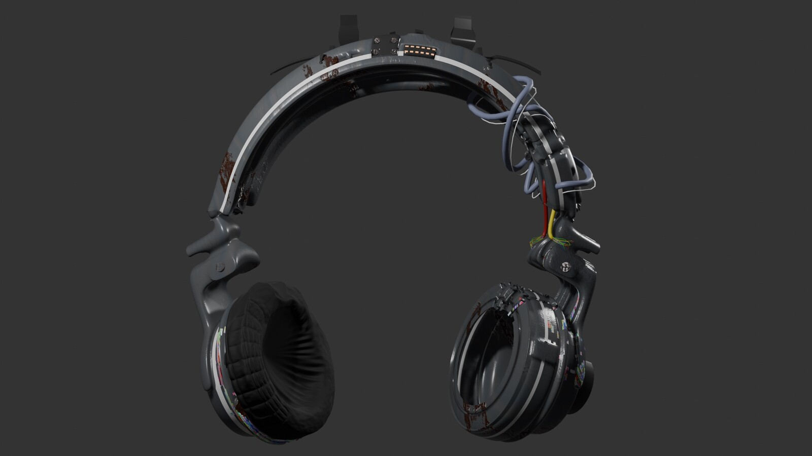

Jewel Lee-Johnson has a strong background in animation and visual arts through both academic training and hands-on production work. She earned a BFA in Film/Animation/Video from the Rhode Island School of Design, focusing on digital animation, 3D modeling, and experimental media, working with tools such as Blender, Unreal Engine, Unity, and the Adobe Creative Suite.
Her experience spans 3D modeling, texturing, rendering, motion capture, and procedural animation, as well as compositing and video/film editing. She has worked with motion capture systems including Perception Neuron and Axis Studio, capturing and troubleshooting movement data for animation and XR projects. She has collaborated with Brown University’s XR Hub and supported students with asset management, color spaces, and interactive workflows in Unity and Marvelous Designer.
Jewel aims to create visually compelling, story-driven work, inspired by the electronic and experimental music scene, audio-reactive gaming, and local Black queer experimental performance artists in Philadelphia. Sound drives her approach to 3D modeling, and she seeks to bring BIPOC experimental art into 3D spaces as an underrepresented yet revolutionary outlet.
She actively works in electronic sound and DJing, shaping how she considers motion, timing, and atmosphere in 3D space. She is interested in audio-reactive workflows that allow 3D visuals to respond in gameplay, using tools like Wwise, FMOD, Unreal Engine’s Audio Synesthesia, and Pure Data to translate audio into procedural animation, shader changes, particle systems, and lighting shifts. She also works in performance art and audiovisual installations where animation, sound, and environment converge, exploring hybrid workflows combining TouchDesigner with Unreal or Unity to support live, responsive visuals for performances and cinematic environments. Her focus is on using experimental 3D techniques to expand conventional gaming and VFX workflows.

 
